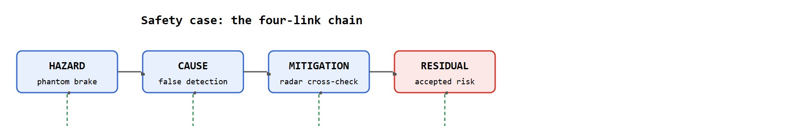

A passing benchmark says the car did well on the test you wrote; a safety case says you wrote the right tests, and what is left when they pass.
On safety assurance for autonomous driving
This section builds on the closed-loop evaluation framing introduced in section 48.1 and the sensor fusion pipeline from section 48.2, which supplies the multi-sensor evidence that safety cases cite. The hazard-coverage ideas developed here are extended in section 52.3, which formalises time-to-collision and gap metrics as evaluation primitives, and in section 54.6, which shows how to quantify and bound residual risk across a continuous operational domain rather than a finite scenario list.
In 2018, an Uber AV struck and killed a pedestrian walking a bicycle across a dark road in Tempe, Arizona. Every sensor was functioning. No component had failed. The system saw an obstacle, classified it as "other," and suppressed the alert. The hazard came not from a broken part but from a function that worked exactly as designed, in a situation the designers had not adequately tested. That gap, between a passing benchmark and a genuine safety argument, is what this section addresses. You will learn how to bound the conditions a system is certified for, trace each hazard to its cause and mitigation, and turn scenario evidence into a structured claim that a regulator can inspect and an engineer can extend.
A self-driving stack can pass one hundred percent of its test suite and still be unsafe to deploy, and the reason is not a bug but a definition: safety here is a measurable contract, not a score. That contract has four moving parts: define the Operational Design Domain (ODD, the explicit envelope of conditions a system is built and validated for, detailed below), enumerate hazards within it, mitigate them, and quantify the residual risk with scenario evidence tied to closed-loop logs. The recurring discipline is that a benchmark number is evidence inside a safety case, never a substitute for one. Figure 48.6A captures this view: a safety case is an argument that traces each hazard through its cause and mitigation down to a residual risk that both a regulator and an engineer can inspect.
The ODD is the explicit envelope of conditions the system is built and validated for: road types, speed limits, weather, lighting, geography, and traffic rules. As a concrete example, Waymo's robotaxi ODD has historically been structured roads in geofenced metro areas, below roughly 70 mph, in defined weather. A vehicle outside its ODD (an unmapped construction reroute, a snowstorm beyond the certified envelope) must detect the boundary and execute a minimal-risk maneuver rather than continue.
The ODD boundary matters because the vehicle's actuators, sensor models, and learned policies were validated only inside it. Cross the boundary and perception degrades in ways the system cannot self-diagnose: a radar tuned for clear highway returns misfires in wet snow, and a lane-keeping network trained on mapped roads fails on a coned-off detour. A wrong action at 60 mph cannot be undone, so the boundary triggers a safe stop rather than a best-effort continuation.
The ODD boundary is a safety trigger, not a performance setting: cross it and the system must stop, because nothing outside was validated.
ODD monitoring fuses several runtime signals. The localization stack compares the current GPS and map tile against the certified geography. Weather classifiers read camera histograms and wiper-state sensors. Speed telemetry checks against the limit table. When any signal crosses its certified threshold, a dedicated boundary monitor sets a flag that overrides the planner and commands a pull-over trajectory. This monitor is a separate, simpler module so an auditor can verify its logic independently, which keeps the safety-critical boundary check outside the complex learned planner.
Here is a question worth sitting with before reading on: if every sensor is working, every component behaves as designed, and the vehicle still strikes a pedestrian, which engineering process failed? The answer is the subject of the next standard.
Classic functional safety (ISO 26262) handles faults: a sensor breaks, a wire shorts. SOTIF handles the harder AV problem of hazards with no fault at all, where every component works as designed but the function is insufficient. Its categories include performance limitations (the perception system genuinely cannot resolve a pedestrian in glare) and foreseeable misuse (a driver over-trusts a driver-assist feature). SOTIF drives you to shrink the space of unknown-unsafe scenarios through analysis and testing.
Shrinking that space is only half the task; the argument that the remaining space is acceptable has to be written down in a form others can inspect, which is what the safety case structure provides.
A safety case is a traceable chain: hazard (unintended braking on the highway) leads to cause (false-positive detection of a phantom obstacle) leads to mitigation (multi-frame confirmation plus radar cross-check before braking) leads to residual risk (the quantified, accepted remainder after mitigation). Every link must point to evidence: a scenario suite, closed-loop logs, and a metric, not merely a claim. This discipline is called hazard-driven coverage tracing, and it separates a safety case from a benchmark report; Figure 48.6B lays out the four-link chain and the evidence layer beneath it. One concrete illustration shows why it matters. The NHTSA analysis of the Uber Tempe crash identified 37 distinct scenario variants for a pedestrian-with-vehicle crossing at night. Uber's pre-deployment test suite covered fewer than 5 of them. The aggregate pass rate never surfaced the gap between 37 hazard variants and 5 exercised scenarios. A safety case is a structured argument, not a score: passing every test you wrote proves only that you wrote passing tests.
So far: a safety case chains hazard to cause to mitigation to residual risk, every link must point to logged evidence (not just a claim), and this hazard-driven coverage tracing is exactly what the Uber Tempe gap (37 hazard variants, fewer than 5 tested) shows a bare pass rate cannot reveal.
Consider the combinatorial scale. A modest ODD with 10 hazard types and 8 slices (road type, lighting, weather) needs at least 80 scenario authorings before coverage is even theoretically complete. Most pre-deployment suites contain fewer than 20. So the average team ships with under 25 percent ODD coverage while the aggregate pass rate reads 100 percent.

Input: Operational Design Domain $\mathcal{D}$ (road types, speeds, weather), hazard set $\mathcal{H} = \{h_1, \ldots, h_n\}$, scenario logs $\mathcal{L}$, safety threshold $\theta_{\mathrm{ttc}}$ (minimum time-to-collision in seconds)
Output: Safety case verdict $v \in \{\text{PASS}, \text{FAIL}\}$, coverage map $C : \mathcal{H} \to \{0,1\}$, residual risk $\rho$
"Scalability in Perception for Autonomous Driving: Waymo Open Dataset" (Sun et al., CVPR 2020). This dataset and benchmark show how a real AV company structures evaluation: large-scale, diverse, multi-sensor (LiDAR plus multiple cameras) data with high-quality 3D labels, split across geographies and conditions, and scored with metrics that weight difficult cases (distant, occluded, rare classes). The lesson for safety is methodological: scale and diversity of evaluation data, plus difficulty-aware metrics, are how companies turn "it works in the demo" into quantitative evidence about the long tail. Real safety measurement is dominated by the rare, hard cases the aggregate score can hide.
A stack can top a perception leaderboard and still lack a defensible safety case if its test scenarios do not cover the real ODD. The decisive question is not "what is the score?" but "which hazards in the ODD are exercised by the evidence, and what residual risk remains for the rest?" Tie every test to a hazard, and every hazard to a mitigation with logged evidence.
Scenario testing operationalizes the safety case. A scenario binds an ODD slice, an actor configuration, a map, weather and lighting, an ego behavior, a safety metric (minimum gap, time-to-collision, collision flag), and an evidence artifact (the closed-loop log). Coverage is measured against the hazard list and the ODD parameter space; residual risk is the portion of that space that remains untested or only mitigated probabilistically. A safety case should point at the logs, not just the scenario names.
The example builds a tiny safety-case checker: it scores closed-loop scenario logs against a hazard list, flags scenarios whose minimum time-to-collision violates the safety threshold, and reports ODD coverage so an untested slice cannot pass silently.
# Each scenario log records its ODD slice, the min time-to-collision (s),
# and which hazard it was designed to exercise.
logs = [
{"id": "S1", "odd": "urban_day_rain", "min_ttc": 2.4, "hazard": "phantom_brake"},
{"id": "S2", "odd": "urban_day_clear", "min_ttc": 0.8, "hazard": "cut_in"},
{"id": "S3", "odd": "highway_day", "min_ttc": 3.1, "hazard": "lead_brake"},
]
required_odd = {"urban_day_clear", "urban_day_rain", "highway_day", "urban_night"}
TTC_FLOOR = 1.5 # seconds; below this is a residual-risk hazard
# Evaluate each scenario against the safety threshold.
violations = [s for s in logs if s["min_ttc"] < TTC_FLOOR]
for s in logs:
status = "FAIL" if s["min_ttc"] < TTC_FLOOR else "ok"
print(f"{s['id']} [{s['odd']:>16}] hazard={s['hazard']:<13} "
f"min_ttc={s['min_ttc']:.1f}s -> {status}")
# ODD coverage: which certified slices have NO evidence at all.
covered = {s["odd"] for s in logs}
uncovered = required_odd - covered
print("\nResidual-risk violations:", [s["id"] for s in violations])
print("Uncovered ODD slices (no evidence):", sorted(uncovered))
print("Safety case PASSES:", not violations and not uncovered)urban_night slice.Expected output: S2 fails (a cut-in with 0.8 s time-to-collision, below the 1.5 s floor), and urban_night is reported as an uncovered ODD slice. The safety case does not pass, correctly, because there is both a quantified violation and a slice of the certified domain with no evidence at all. This is the structural point: passing tests plus missing coverage is still a failing safety case.
Trace the checker over the three logs with TTC_FLOOR = 1.5 and required_odd = {urban_day_clear, urban_day_rain, highway_day, urban_night}.
Threshold pass. S1: min_ttc 2.4 ≥ 1.5 -> ok. S2: min_ttc 0.8 < 1.5 -> FAIL, so S2 enters violations. S3: min_ttc 3.1 ≥ 1.5 -> ok. After this loop, violations = [S2].
Coverage pass. The slices with evidence are covered = {urban_day_rain, urban_day_clear, highway_day}. Set subtraction gives uncovered = required_odd - covered = {urban_night}, one certified slice with zero logs.
Verdict. not violations is False (one violation) and not uncovered is False (one gap), so PASSES = False and False = False. The case fails for two independent reasons: a measured TTC violation (S2) and an unexercised slice (urban_night). Fixing only one still leaves the verdict False, which is exactly the point: coverage and threshold are separate gates and both must clear.
Use CARLA ScenarioRunner and the OpenSCENARIO standard to author reproducible scenarios, CommonRoad for benchmark scenarios with formal metrics, and the Waymo Open Dataset for difficulty-aware perception evaluation. Safety-case structure can be expressed with the Goal Structuring Notation (GSN), a diagrammatic notation for linking claims, evidence, and context that is widely used in assurance-case tooling, where an assurance case is the general term for the hazard-to-evidence argument this section applies to autonomous vehicles. Keep one artifact schema linking scenario, metric, and log.
When authoring OpenSCENARIO files for CARLA ScenarioRunner, always declare the osc_minor_version attribute in the FileHeader element to match the runner version you are using (1.0 vs 1.1 differ in how ParameterDeclaration scoping works). If it is missing or mismatched, ScenarioRunner silently applies only the first parameter value across all variations, so your coverage report shows every ODD slice exercised when in practice the same configuration ran repeatedly. Verify by checking the scenario_runner.log for "ParameterDeclaration" warnings before trusting any coverage count.
The benchmark passes while the safety case lacks evidence for the real ODD. A team reports 99 percent scenario pass rate, but every scenario is clear-day urban; night, rain, and construction zones are absent. The aggregate number hides an uncovered slice where residual risk is unknown. Always report coverage gaps as loudly as pass rates.
A common assumption is that a 100 percent scenario pass rate equals a valid safety case: if the vehicle passes all the tests, the system is safe. This is wrong. The physical world is not bounded by your test suite. A safety case is a structured argument: every hazard in the ODD has a named mitigation backed by closed-loop evidence. A passing test suite only shows that the scenarios you chose to author were handled correctly. Hazards you did not enumerate, ODD slices you did not exercise, and failure modes your authors did not anticipate all carry residual risk the pass rate cannot measure. Scenario logs are evidence for specific hazard-mitigation claims. The safety case is only as complete as the hazard enumeration and ODD coverage behind those claims, not as the fraction of authored scenarios that return "ok."
Residual risk is like the surface of a cutting board after you have cleaned every spot you noticed: the board may look safe, but any patch you never wiped still carries whatever was there before. Running more scenario tests is like wiping more of the board; quantifying residual risk is like asking how much uncleaned surface area remains and estimating what contamination is probably on it. A safety case does not claim the board is spotless; it claims the uncleaned fraction is small enough, and known enough, to be acceptable.
Construction-zone map staleness is a recurring SOTIF performance limitation: the HD map shows a lane that is now coned off. The safety case must list this hazard, mitigate it (online detection of cones and lane closures overriding the map), and quantify residual risk (the fraction of construction layouts the detector still mishandles), with scenario logs as evidence.
Waymo's public Safety Framework operationalizes exactly this hazard-to-residual-risk chain: it bounds the ODD per metro area, enumerates hazards from naturalistic crash data, and backs each mitigation with simulation evidence (over 20 billion simulated miles in Waymo's Carcraft / Simulation City pipeline) plus on-road logs. The verdict is never a single pass rate but a structured assurance argument that NHTSA and independent reviewers can inspect link by link.
Hazard, cause, mitigation, residual risk: four links in one chain. A safety case is only as strong as the link with no evidence behind it.
Generative scenario synthesis via diffusion and language models (2024-2026). Rather than perturbing logged trajectories, recent work generates entirely novel critical scenarios conditioned on a hazard type and ODD slice. Waymo's ScenarioMax (2025) and work from the Uber ATG / Aurora lineage use diffusion models over scene graphs to synthesise pedestrian and cyclist trajectories that are both physically plausible and safety-critical, reportedly producing on the order of a 10x expansion of rare-event coverage without additional real-world mileage, though the reliability of that expansion depends on how well the generator's scenario distribution matches real hazard frequencies, an open question addressed below. Language-conditioned variants let a safety engineer write "cyclist runs red light from behind a parked truck at dusk" and receive a distribution of conforming CARLA scenarios automatically.
Neural safety certificates and runtime monitors (2024-2026). Rather than certifying a policy offline, a parallel line of research trains lightweight barrier-function networks, neural networks trained to approximate a mathematical safety boundary, that run alongside the planner in real time and veto actions whose predicted trajectory exits the certified ODD envelope. Work from MIT LIDS and Waymo Research (2024) shows that learned control barrier functions can, in a bounded state region, be formally verified using satisfiability modulo theories, automated solvers that prove or disprove logical formulas over real-valued constraints, yielding a runtime monitor that in principle provides hard guarantees within the verified region and graceful degradation outside it, though verification cost still limits the technique to small, carefully bounded state spaces rather than the full ODD. This bridges the gap between offline safety cases and online assurance.
Multimodal foundation models as ODD monitors (2025-2026). Vision-language models such as DriveLM (Li et al., 2024, ECCV) and DriveVLM (Tian et al., 2024) repurpose large pretrained models to reason over sensor streams and flag when a scene departs from the training distribution or from the certified ODD. These models can identify novel object categories, unusual road geometry, and edge-case weather conditions that rule-based monitors miss, providing a semantic early-warning layer above the numerical boundary monitor.
Open problem for PhD research. All three directions above share a calibration gap: how trustworthy is the generated scenario distribution? A diffusion model conditioned on "cyclist from blind alley" may oversample geometrically convenient configurations and undersample the truly adversarial tail, leading to residual-risk estimates that are optimistic. A tractable PhD project is to develop a statistical audit protocol, analogous to p-value calibration in hypothesis testing, that measures whether a generative scenario suite covers the true hazard distribution in proportion to real-world encounter frequencies, using naturalistic driving datasets (Waymo Open, nuPlan) as a ground-truth reference against which generator bias can be measured and corrected.
Can you trace one concrete highway hazard through cause, mitigation, and residual risk, and name the evidence each link needs? If not, the safety case is still a slogan, not an argument.
| Tool or Library | Role in the Topic | Builder Advice |
|---|---|---|
| CARLA ScenarioRunner, OpenSCENARIO | Reproducible scenario authoring | Tie each scenario to a hazard in the safety case. |
| CommonRoad | Benchmark scenarios with formal metrics | Use for comparable closed-loop safety metrics. |
| Waymo Open Dataset | Difficulty-aware perception evaluation | Report long-tail and per-difficulty metrics, not only aggregates. |
Section 48.1 frames the closed loop a safety case must cover, Section 48.5 supplies world models for generating rare scenarios, and Section 48.9 turns this assurance structure into closed-loop evaluation metrics.
Extend the worked checker to weight violations by exposure (how often each ODD slice occurs in deployment) and produce a single residual-risk number. Then add an urban_night log and confirm the safety case flips to passing only when both coverage and the threshold are satisfied.
Sun et al., "Scalability in Perception for Autonomous Driving: Waymo Open Dataset," CVPR 2020. ISO 21448:2022, "Road Vehicles: Safety of the Intended Functionality (SOTIF)." Koopman and Wagner, "Challenges in Autonomous Vehicle Testing and Validation," SAE 2016.
These define the benchmark methodology, the SOTIF standard, and the validation-coverage challenges underlying AV safety cases.
Safety assurance is an argument that traces every ODD hazard through cause, mitigation, and residual risk, backed by closed-loop scenario evidence. A high benchmark score is one piece of that evidence, never a replacement for coverage of the real operational domain.
Pick one ODD (geofenced urban, below 45 mph, day, light rain). Enumerate five hazards, map each to a cause and mitigation, design a scenario per hazard with a safety metric and threshold, and state the residual risk that remains if all five scenarios pass.
Beginner (weekend): ODD coverage checker in CARLA. Build a Python script that authors three OpenSCENARIO files covering distinct ODD slices (clear day, night rain, construction zone), runs them in CARLA ScenarioRunner, logs minimum time-to-collision per run, and prints a coverage report flagging any slice with no passing evidence. The key challenge is wiring ScenarioRunner's XML parameter scoping so each variant genuinely runs a different configuration rather than repeating the first one silently.
Intermediate (1-2 weeks): Hazard-driven safety case with adversarial scenario generation. Using Gymnasium with a highway-env driving environment, implement a mini safety-case pipeline: enumerate five hazards (cut-in, phantom brake, pedestrian crossing, lane-end, occlusion), write one hand-authored scenario per hazard, then add a gradient-free perturbation loop (random search over actor speeds and headways) that finds TTC-floor violations the hand-authored scenarios miss. The key challenge is keeping the perturbation loop tractable, since naive search over continuous actor states explodes quickly, and linking each found violation back to the originating hazard so the coverage map stays meaningful.